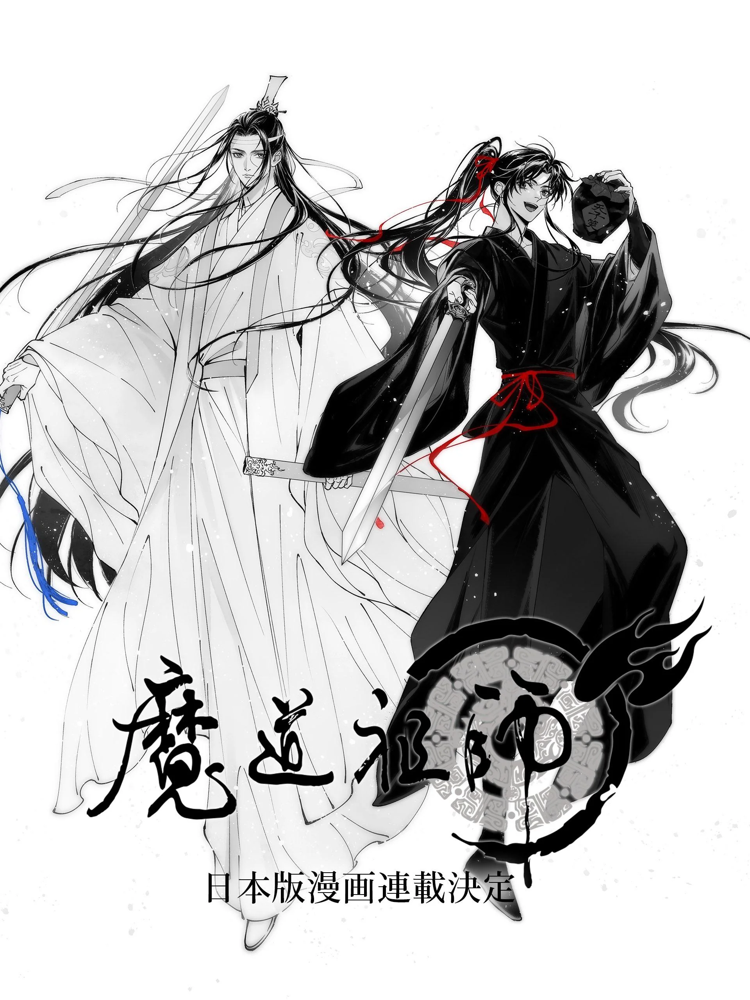

Una emocionante noticia ha llegado a oidos de los amantes de la literatura y el anime, se ha confirmado la entrega de una nueva adaptación a la famosa novela "Mo dao zu shi" obra creada por Mo Xiang Tong Xiu.
Esta adaptación al manga, anunciada oficialmente por la editorial china Bilibili Comics, ha generado una enorme expectación entre los fanáticos, quienes han estado esperando con ansias una versión gráfica que capture la magia y complejidad de la historia. El manga está siendo ilustrado por el artista Jiang Zhi, quien ha logrado mantener el tono oscuro y emocional de la obra original, destacando por sus excepcionales ilustraciones y su estilo detallado manteniendo así el toque visual característico de los mangas japoneses.
La historia de Mo Dao Zu Shi sigue a Wei Wuxian, un joven prodigio que se convierte en un exiliado tras practicar artes oscuras prohibidas. A lo largo de la serie, se enfrenta a secretos, traiciones y enemigos mientras forma una inesperada y profunda relación con Lan Wangji, un miembro de una secta rival. La narrativa mezcla elementos de acción, fantasía y romance, lo que la ha convertido en un fenómeno global, especialmente en la comunidad de fans del género "danmei", o romance entre hombres.
Los seguidores de la obra podrán disfrutar de esta nueva versión que promete capturar la magia y la intensidad emocional del original. Se espera que el manga mantenga el equilibrio entre las batallas espectaculares y los momentos de desarrollo de los personajes, que han sido fundamentales en el éxito de Mo Dao Zu Shi
La primera entrega del manga se lanzará en Japón el próximo mes, y se espera que pronto llegue a otros mercados, incluido el occidente. Esta adaptación añade una nueva dimensión al universo de Mo Dao Zu Shi, brindando a los fans una experiencia más visual de los personajes y escenarios que ya han amado. Además, se espera que el manga sea solo el comienzo de una serie de proyectos que continúen expandiendo el legado de la obra.
Con la creciente popularidad de la serie en anime, novelas y manhua, la llegada del manga promete aumentar aún más el fenómeno global que es Mo Dao Zu Shi. Sin duda, esta será una de las grandes sorpresas para el 2025 para los seguidores de la cultura asiática y el manga en particular.